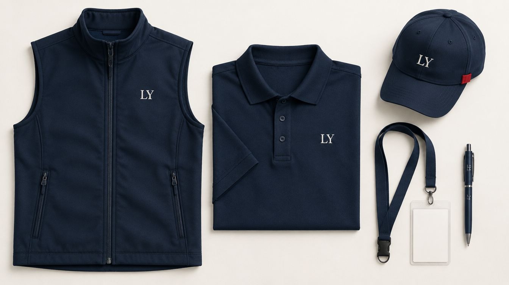

Kurye, saha ekibi, şantiye ve fuar görevlisi için logo baskılı iş yeleği; kulüp ve hobi grupları için kişiye özel yelek. Göğüste küçük, sırtta büyük baskı.

Yelek, kurumsal giyimin en pratik parçası: tişörtün ya da gömleğin üstüne giyiliyor, mevsime göre çıkarılıyor, logoyu her zaman öne alıyor. Saha ekiplerinde “bizden biri” demenin en hızlı yolu; etkinliklerde görevliyi kalabalıktan ayıran tek şey.
Baskıyı DTF ile yapıyoruz; yeleğin düz göğüs ve sırt panellerine basılıyor, cep ve fermuar hattına değil. Ürünü de biz tedarik ediyoruz: şişme (puffer) yelek, softshell yelek, hafif spor yelek ve cepli iş yeleği seçenekleri.
Hazır tasarımlar. Birine dokunun — aşağıdaki stüdyoda açılır, üstünde istediğiniz gibi oynarsınız.
Rengi seçin, tasarımı sürükleyip büyütün, yazıyı kendiniz yazın — ya da kendi dosyanızı açın. Beğendiğinizde tek tuşla sipariş.
Stüdyo yükleniyor… Açılmazsa WhatsApp'tan yazın, tasarımı birlikte kuralım.
Önizleme baskının yerini, ölçüsünü ve rengini gösterir; kumaş dokusu ve ekran ayarları yüzünden gerçek ürün birebir aynı görünmeyebilir. Baskıdan önce size son bir görsel onayı gönderiyoruz. Dosyanız yüklenmiyor — tarayıcınızda kalıyor, sipariş mesajına indirdiğiniz önizlemeyi ekliyorsunuz.
Kurumsal yelekte iki ihtiyaç var: kimlik ve işlev. Kurye ve teslimat ekibi için hafif, cepli ve sırtta büyük logolu; şantiye ve depo için dayanıklı kumaş ve göğüs baskısı; fuar, kongre ve saha satış ekibi için düzgün duran softshell ve küçük logo. Yeleği polo tişört ve şapkayla aynı monogramda basınca tek bakışta tanınan bir ekip seti çıkıyor.
Beden listesini alıyor, ürünü tedarik ediyor, basılı ve etiketli teslim ediyoruz. Sezon değişiminde aynı logo yaz için tişörte, kış için yeleğe basılıyor; ürün değişiyor, tasarım dosyası aynı kalıyor.
Kişiye özel yelek daha çok hobi ve grup işi: balıkçılık ve doğa yürüyüşü yeleğine isim ve rozet, motosiklet grubu için sırt tasarımı, avcılık ve kamp kulübü için grup logosu, amatör spor takımı için antrenör yeleği. Bir de hediye tarafı var: babaya isimli balıkçı yeleği, dedeye köy adı işlenmiş hafif yelek.
Tasarımı biz çiziyoruz ya da grubun mevcut amblemini baskıya hazırlıyoruz; tek parça sipariş alıyoruz.
Ürün: şişme (puffer) yelek, softshell yelek, hafif spor yelek, çok cepli iş yeleği; siyah, lacivert, gri, haki ve sezon renkleri; yetişkin bedenleri.
Baskı yeri: göğüs sol küçük logo, sırt üst orta büyük logo ya da yazı; cep, fermuar ve kapitone dikişi üstüne basılmıyor, tasarım düz panele göre yerleşiyor.
Bakım: düşük sıcaklıkta yıkama, tersten kurutma; şişme yelekte baskı üstüne ütü yok.
Şişme mi softshell mi, kaç cep, hangi renk, hangi bedenler; kullanım yerine göre model öneriyoruz.
Logo göğüs ve sırt paneline göre ölçekleniyor; yelek üstünde ekranda gösteriliyor.
DTF ile düz panellere basılıyor; kapitone yelekte ilk parça ayrıca kontrol ediliyor.
Bedenine göre etiketli; polo ve şapkayla set hâlinde istenirse birlikte.
Baskılı Tişört · Baskılı Sweatshirt ve Hoodie · Baskılı Kalem · Tüm baskı ve hediye ürünleri
Olur; baskı kapitone dikişlerinin arasındaki düz panele yerleşiyor. Çok küçük panelli modellerde logo ölçüsü sınırlanıyor, o yüzden modeli baştan birlikte seçiyoruz.
Baskı olarak hayır; reflektif şerit ürünün kendisinde olmalı. Reflektifli iş yeleği modelleri var, ihtiyaç buysa o ürünü tedarik edip üstüne logo basıyoruz.
Evet. Aynı monogram ya da logo üç ürüne de basılıyor, set hâlinde teslim ediliyor; ekip seti en çok bu şekilde gidiyor.
Olur; en yaygın yerleşim bu. Göğüste firma adı ya da logo, sırtta bölüm ya da görev adı (“Teknik Servis”, “Görevli” gibi).
Basarız. Kumaşı ve modelini önceden söyleyin; su itici kaplamalı bazı kumaşlarda tutunma zayıf oluyor, o durumda uygun ürünü öneriyoruz.
İletişim
Kaç kişi, hangi model, göğüs mü sırt mı — yazın; tasarımı yelek üstünde gösterelim.